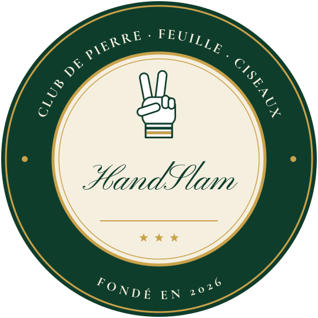

Analyse technique
Précis des ouvertures
Par la rédaction · 30 octobre 2026 · 6 minutes de lecture
Quand on sait l'importance que revêt le premier point dans la physionomie et l'issue d'une rencontre, il n'est pas excessif de parler d'une « angoisse de l'ouverture », bien documentée dans la littérature (Michael Carter, Fear of Opening – Opening of Fear, Chicago, 1971). Cette appréhension ne relève pas d'une angoisse de la page blanche ou d'une peur du vide : les impasses étant sanctionnées d'un point de pénalité, elles seraient suicidaires en ouverture d'une rencontre.
Le joueur a donc la certitude que la page blanche sera remplie, et le vide comblé, de part et d'autre du central. Non, l'angoisse de l'ouverture procède bien plutôt d'un embarras du choix : elle renvoie au poids de la responsabilité devant ce (triple) dilemme, sans cesse répété : pierre (P), feuille (F) ou ciseaux (C). Elle prend sa source dans cette nécessité, cette obligation d'opérer un choix, mais aussi de renoncer, d'un coup d'un seul, à 6 des 9 chemins qui s'offrent au joueur (P/P, P/F, P/C, F/P, F/F, F/C, C/P, C/F, C/C).
Par cette alchimie d'une réduction instantanée des possibles, on le voit, l'ouverture est d'abord le choix d'un non-choix, le choix de ne pas retenir les deux options que le joueur écarte dans un geste souverain et par une intime conviction. Nul Dieu pour l'épauler dans l'épreuve, nul guide pour l'éclairer dans la nuit des scénarios potentiels : le joueur est irrémédiablement seul à l'heure du choix, mais il ne peut que choisir, et il lui faut choisir bien.
1. Choix des armes, choix des larmes
Le choix des armes est un choix des larmes. La question est de déterminer si ce seront celles du joueur ou de l'adversaire. Donc, que choisir ? En matière d'ouverture, l'école de Kiel n'a jamais fait mystère de sa prédilection pour la pierre (August Vollendorf, « Mein ist der Stein », Annalen der Föderation, n° 12, 1918). C'est au demeurant l'un de ces points remarquables (la convergence n'est pas si rare dans la pratique du jeu) où l'analyse experte finit par s'accorder avec l'instinct du néophyte. Les spécialistes ont depuis longtemps relevé une fréquence accrue pour la pierre comme choix initial, suivie, dans l'ordre, par la feuille et les ciseaux. Dans ces conditions, l'ouverture en pierre représente le plus sûr choix pour une égalité et est à envisager, pour cette raison, comme une ouverture défensive.
Le pendant de ce constat statistique est que la feuille doit être perçue (l'idée peut paraître contre-intuitive pour le profane) comme un signe offensif. Némésis d'une pierre que le confort et l'habitude conduisent trop souvent à privilégier au coup 1, elle peut aussi être utilement mobilisée en ouverture pour parer une feuille sournoise jouée par un adversaire plus averti. La feuille offre aussi l'avantage de ne s'exposer qu'au signe le moins fréquemment utilisé en ouverture, à savoir les ciseaux.
Les ciseaux doivent-ils dès lors être envisagés comme une arme de dernier choix ? Au regard de l'analyse développée précédemment, le signe est à double tranchant (le lecteur nous pardonnera le jeu de mots). Les ciseaux peuvent en effet aisément se heurter au signe le plus usité en ouverture, la pierre. Statistiquement plus rare au coup 1, le choix des ciseaux limite aussi la possibilité d'une égalité à l'engagement, laquelle offre pourtant un répit appréciable pour cerner et jauger l'adversaire. Dans le même temps, cependant, les ciseaux restent une option intéressante pour cueillir une feuille adverse trop hardiment lancée au coup 1. Cette qualité n'est certainement pas étrangère au regain d'intérêt que les ciseaux ont pu connaître dans les stratégies d'ouverture de certains joueurs chevronnés.
2. Ouverture en bis repetita et ter
Popularisée par le chef de file du cercle pisan, Giovanni Cascarino, largement mobilisée par le Bulgare Letchkov lors du Grand Chelem de 1956, l'ouverture en bis repetita (PP, CC ou FF) présente un indéniable attrait. Face à un joueur peu expérimenté ou à un adversaire qui tarde à rentrer dans le match, elle produit généralement un rendement intéressant. La pertinence de la maintenir après un échec au coup 1 se pose cependant, à plus forte raison contre une main experte. La question du dégagement n'est pas non plus à minimiser : si un dégagement vers le signe contraire (PPF, CCP, FFC) paraît plus adapté après une réussite relative aux coups 1 et 2, il devient très périlleux après deux échecs ; à l'inverse, un dégagement vers le tiers signe (PPC, CCF, FFP) offre une alternative plus prudente face à un joueur qui attend désormais son adversaire au tournant.
Ces deux questions (rendement et dégagement) revêtent plus d'acuité encore dans le cadre d'une ouverture en ter (PPP, FFF, CCC). Plus rare et généralement utilisée dans les rencontres de haut niveau, elle est à envisager comme une stratégie « high risk, high reward », à mettre en œuvre avec parcimonie. C'est aussi dans cette optique qu'il convient d'appréhender les ouvertures plus fantaisistes, que l'on pourrait qualifier de « fleuves » (PPPP…, FFFF…, CCCC…). Nous ne développerons donc pas davantage l'analyse sur ce chapitre.
3. Ouverture alternée
Utilisée à bon escient, l'ouverture alternée (PFCPFC, FCPFCP…) peut déstabiliser un adversaire habitué aux stratégies tout humaines. Elle produit généralement un gain immédiat à la brisure de cycle (CFPCF-F, PCFPCF-F…). L'inconvénient est aussi qu'elle est aisément décelable, avec une identification visuelle quasi immédiate dans l'historique, même pour un œil peu attentif. Nous recommandons donc de ne pas l'étendre au-delà de deux cycles, en faisant preuve d'une vigilance particulière en fin de cycle, moment que l'adversaire saisit habituellement pour une action de parade.
Une variante, à l'honneur chez les théoriciens russes, réside dans l'ouverture alternée sur deux signes (PFPFFFPF…, CCCPPCCP…). Elle demande néanmoins du sang-froid et une forte résilience, notamment lorsque le rendement et les gains ne sont pas au niveau escompté.
4. Trash talking, annonces et théâtralité
Une rencontre se gagne aussi en amont, dans la phase de pré-ouverture. La pratique du trash talking, importée des playgrounds de HandSlam, y trouve toute sa place, même si les joueurs sont partagés sur le recours à une telle arme, qui fait partie de l'arsenal de l'approche dite « psychologique ». La palette des invectives est pour ainsi dire infinie ; l'objet, dans tous les cas, est de déstabiliser, d'instiller le doute ou d'aiguillonner une confiance excessive chez l'adversaire, avec un même résultat bénéfique.
Dans ce panorama, les annonces occupent une place particulière. Qu'elles concernent sa propre ouverture (« Je vais jouer Feuille », « Pour moi, Ciseaux ou Pierre ») ou bien celle de l'adversaire (« Je le sais, tu vas jouer Pierre »), il s'agit alors d'enfermer l'opposant dans une alternative réduite à deux options, qui facilite grandement la tâche d'analyse au coup 1.
Tous ces ressorts s'inscrivent plus largement dans les effets de théâtralité et les efforts pour se construire un personnage, auxquels sont habitués les joueurs rompus à l'exercice. L'ouverture fleuve (voir supra), particulièrement spectaculaire, fait partie de la panoplie. Pour d'évidentes raisons, elle ne peut cependant revêtir un caractère systématique et sera jouée, de préférence, au début du premier set, ou à l'ouverture d'une manche faisant suite à un set victorieux.
